Pine Display Shelf
Supporting files
Additional photos, video recordings, requirements, and project notes. The main case study presents the selected results; these files provide further context and design history.
Each file can be opened or downloaded individually. Expand a category to browse individual files. HEIC images may require downloading to view.
Documents (1)
Read text
Overview: The Pine Display Shelf is a handcrafted L-shaped shelf created from unlaminated pine plywood. Built with basic tools, this project allowed me to explore woodworking techniques while working towards a more personal home. Design Parameters: • Made of wood - Consider delamination or other wood-specific damages - Plan subtractive manufacturing - Only use a jigsaw and a drill • Aesthetically pleasing • Can sturdily stand upright while holding reasonably heavy items for display • Materials cost less than $100 (spent $77.58) Proof of Concept (POC): • RoomLayout - layout of the destination room • FrameModel - model of the outer frame of the display shelf • LayoutModel - assembly of the frame and room layout to verify that the shelf can be maneuvered into the desired position • RoomLayoutWAssy - model of the final display shelf in the room • Board-Cutting Schematic - sketch of the selected plywood boards with the cuts shown Components: • 5x Frame Beam - vertical beams to hold plates together • Shelves - differently-shaped shelves to support various display items • Shelf Supports - differently-shaped plates to support a shelf above another shelf • 2x Sandwich Plate - plates on the top and bottom to sandwich the frame beams • Aluminum L-Brackets - brackets that allow the shelves to be bolted to other components • Bolts - fasten components to brackets
documents/Summary - Pine Display Shelf.txt · 0.00 MB · Download
Media/Images (16)
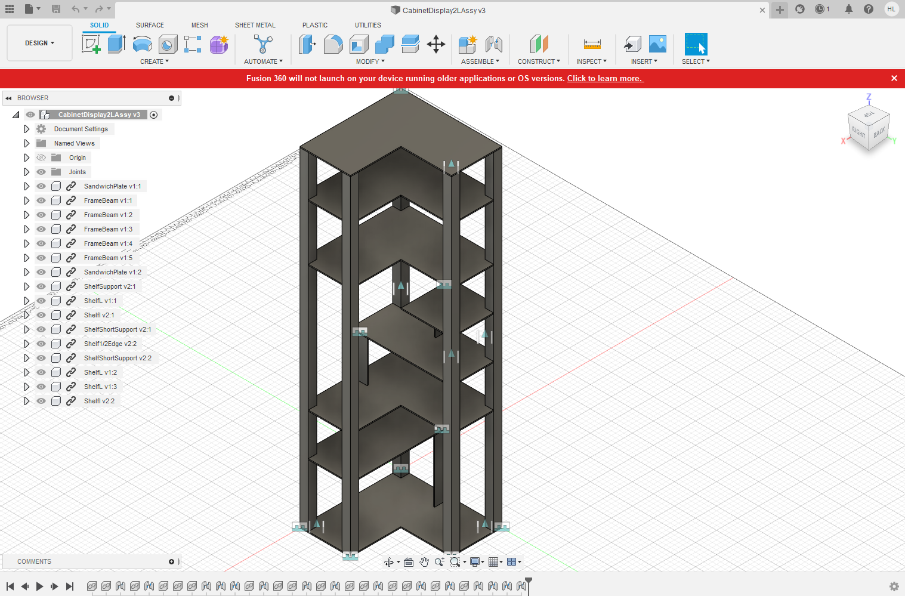
media/images/cad.png · 0.47 MB · Download
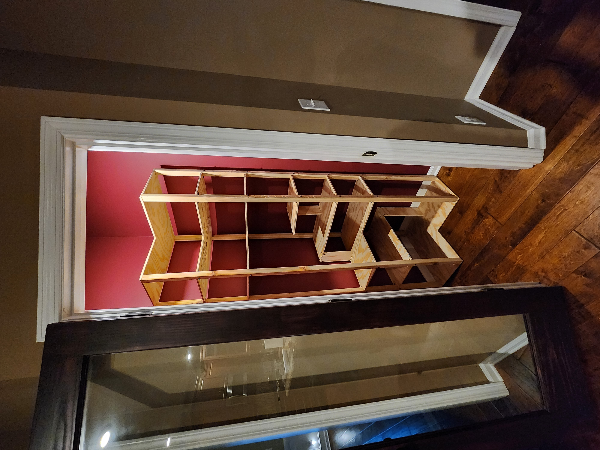
media/images/completed-shelf-assembly.jpg · 2.80 MB · Download
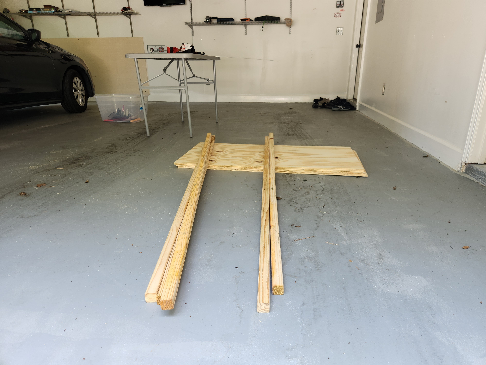
media/images/construction-steps--step0.jpg · 2.51 MB · Download
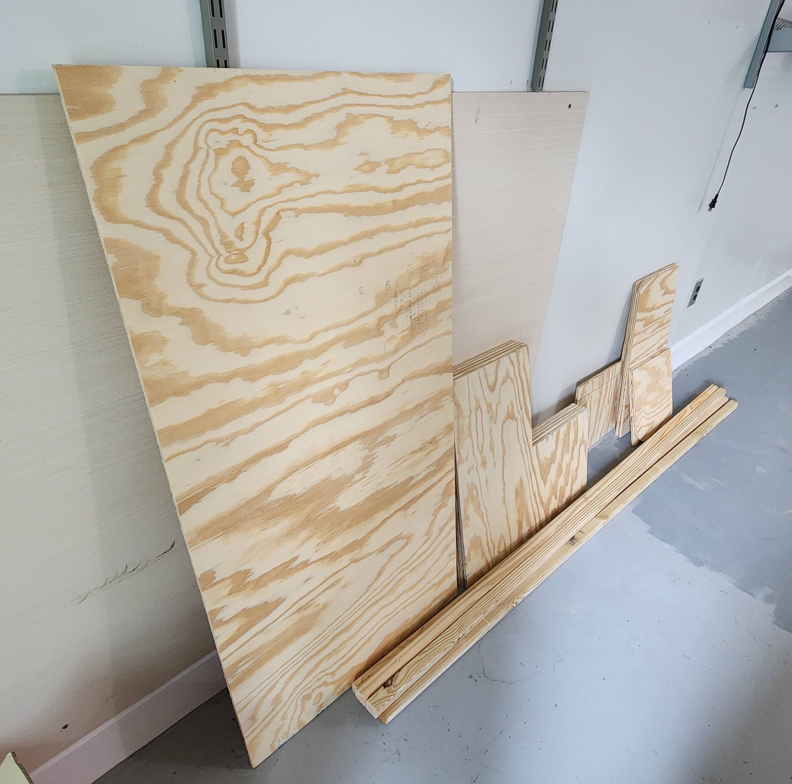
media/images/construction-steps--step1.jpg · 1.01 MB · Download
media/images/construction-steps--step2.heic · 0.11 MB · Download
media/images/construction-steps--step3.heic · 0.11 MB · Download
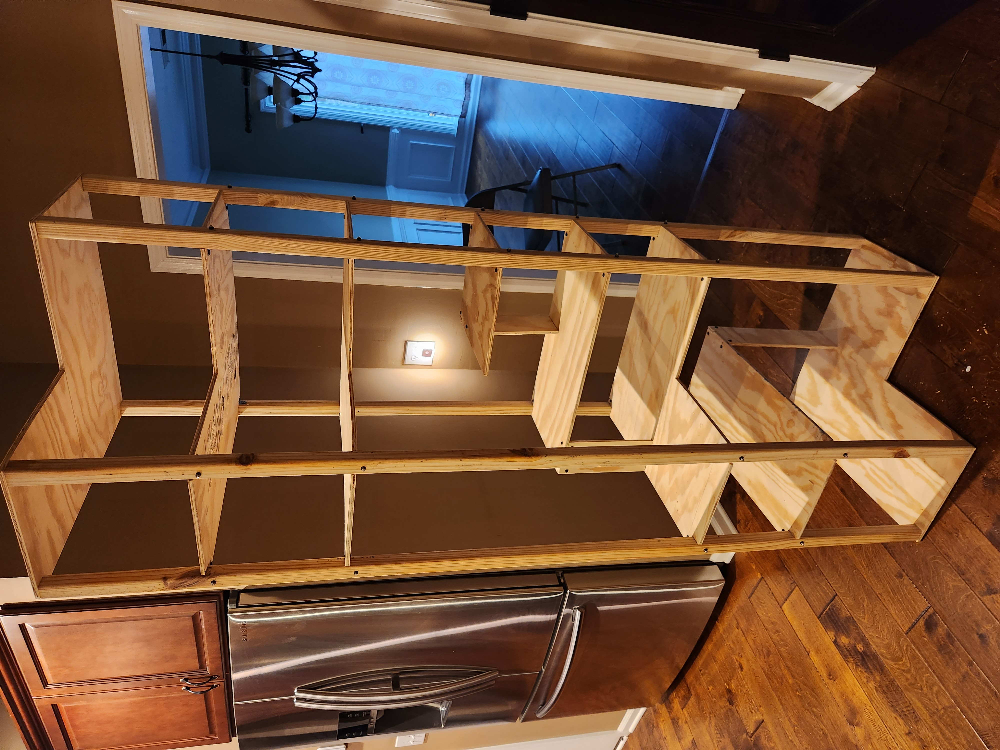
media/images/construction-steps--step4.jpg · 2.99 MB · Download
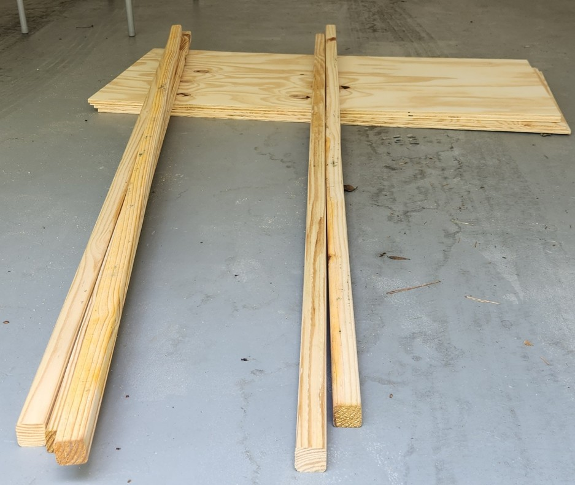
media/images/day-0-raw-materials.jpg · 0.13 MB · Download
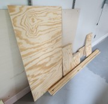
media/images/day-1-plywood-cut.jpg · 0.01 MB · Download
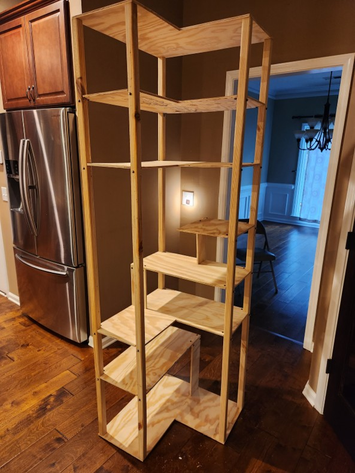
media/images/day-2-shelf-assembled.jpg · 0.11 MB · Download
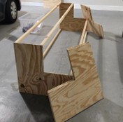
media/images/day-2-shelf-assembly.jpg · 0.01 MB · Download
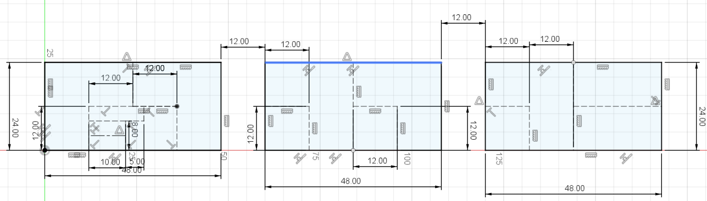
media/images/design-steps--cut-layout.png · 0.08 MB · Download
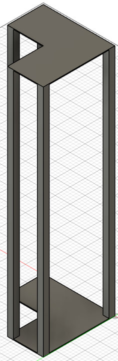
media/images/design-steps--frame.png · 0.10 MB · Download
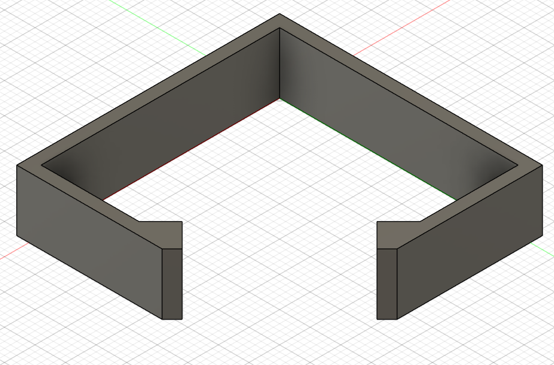
media/images/design-steps--room-layout.png · 0.20 MB · Download
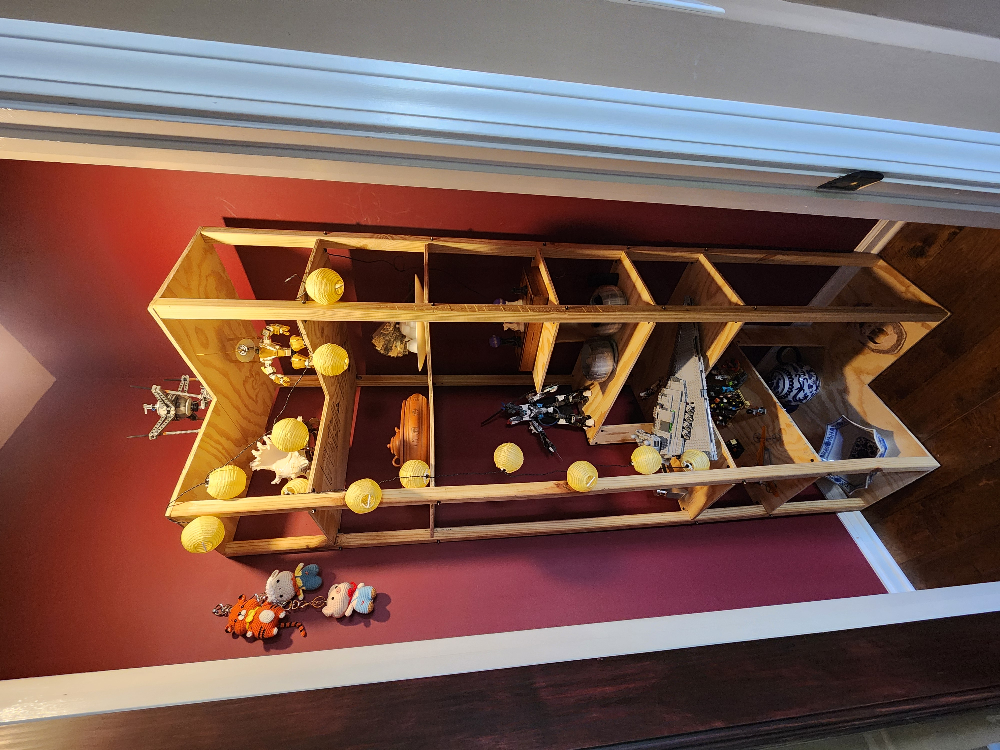
media/images/display-shelf.jpg · 2.91 MB · Download
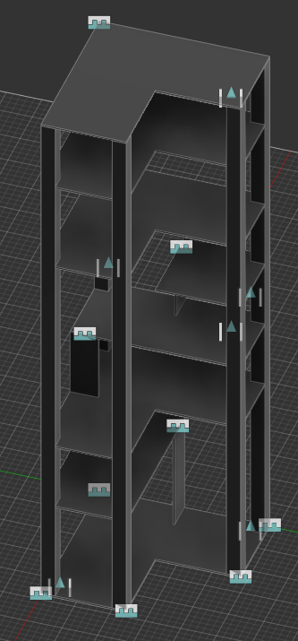
media/images/master-assy.png · 0.11 MB · Download


Notes (1)
Read text
# Pine Display Shelf ## Purpose Create an attractive freestanding display shelf that fits the room and supports the intended display items. ## Requirements and constraints - Use unlaminated pine plywood and account for wood damage and delamination. - Fabricate with a jigsaw and drill. - Keep materials below $100. - Check room fit, installation clearance, stability, and appearance. ## Engineering contribution Modeled the room, frame, shelf assembly, and board-cutting layout. The structure uses five frame beams, shaped shelves and supports, top/bottom sandwich plates, aluminum L-brackets, and bolts. ## Outcome and limits Built and installed the shelf using a jigsaw and drill. Materials cost $77.58 against a budget below $100. ## From room-fit planning to the installed shelf Before: The shelf needed to fit an irregular room and be maneuvered into position using limited fabrication tools. After: Room and frame models checked placement; a board-cutting schematic guided fabrication of the L-shaped shelf. Installation photos document the resulting build.
project-notes.md · 0.00 MB · Download